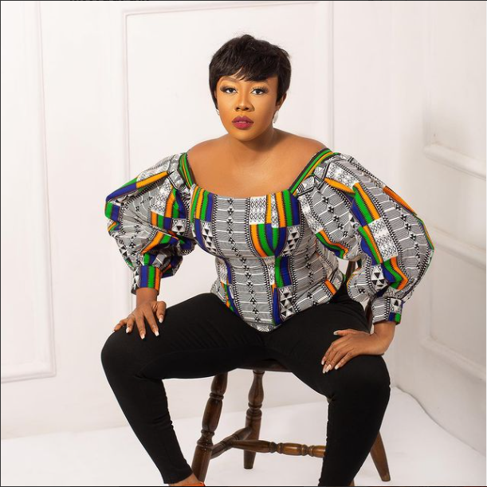

THE PRINT LIFE
Welcome to the Print Life!!!

ABOUT US
With over 10,000 monthly engagements on social media, The Print Life is one of the world's largest, most popular bespoke and ready to wear design community.
We carry out surveys periodically to identify consumer needs and deep dive opportunities for the world's most innovative fashion design companies,
with our research and workshops helping over 50 brands, celebrities, and fashion bloggers to date.
The Print Life is a source of inspiration for design industry professionals, aspiring designers,
and the insatiably curious. We're currently studying more than 5000 cutting edge fashion/clothing ideas using over 20 thousand choices and suggestion from people.
Each day, The Print Life features a daily dose of innovative ideas, viral news, and pop culture,
filtered into clusters of inspiration for our custom trend reports every day to create a fashionable future.